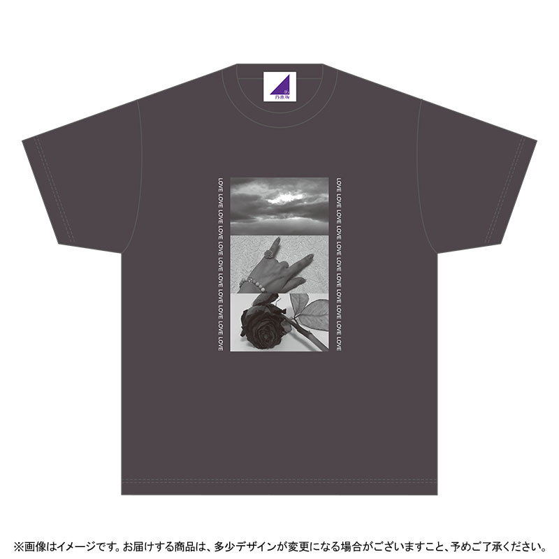
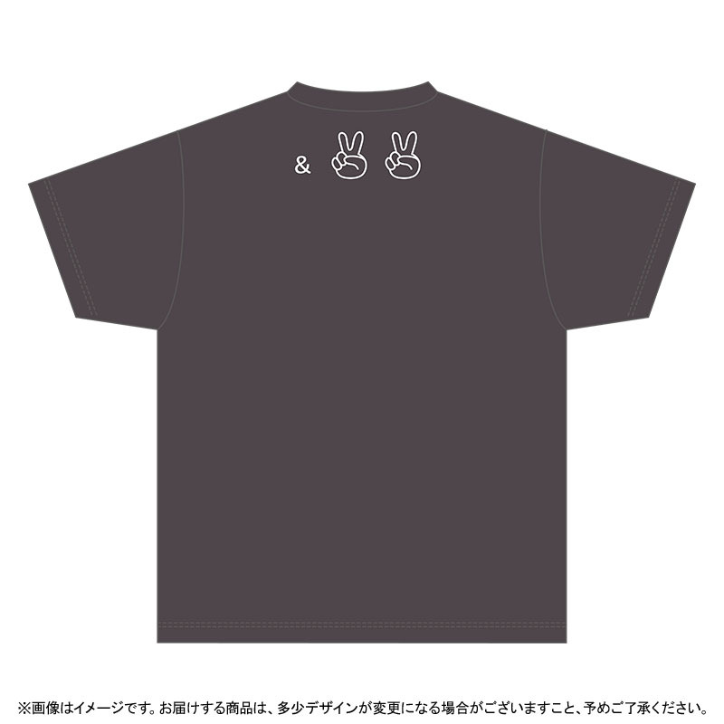
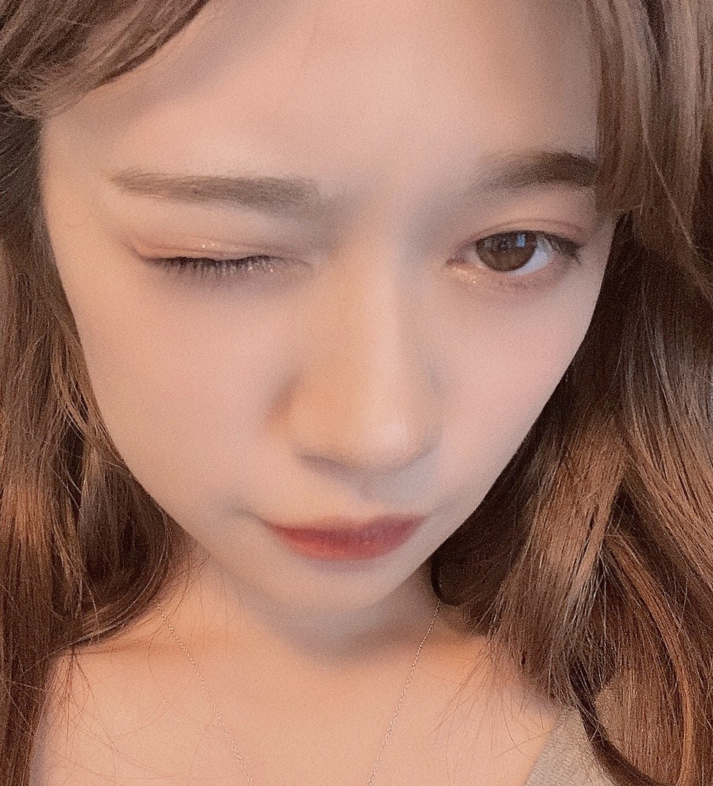

2020/0801Satみてー！
https://www.nogizaka46shop.com/
✌️【予約販売受付期間】8月3日(月)23:00まで✌️


生誕グッズが公開されましたー。☺️
今年は歴代とガラッとテーマを変えてみました。
いつものグッズならではのゆるいキャラTシャツも
捨て難かったのですが
こんな年があってもいいかなーと
少し綺麗めを意識して考えました。
空
ハンドサイン
私がよく使うl love youのサイン
薔薇
ハンドサインの意味と
私の手なのですが、小指につけている指輪は
薔薇の指輪で
薔薇の写真とも合うようにだったり
昔の生誕Tシャツのデザインにもした
私にとって大切で意味のあるお花の１つなのでそこも意識して画像を選びました。
毎年生誕祭やイベントのお花も薔薇を送ってくださる方が多くて
私にとって大切なお花です。
薔薇の画像は本当にお家に飾っていた
本物の薔薇の画像です。
写真の横にはLOVEが22コ
今年の年齢の数書きました。
そして、後ろの&✌️✌️
にこにこで22歳を意味していたり
色々な意味があります。
そして、Tシャツ全体で
LOVE &✌️をテーマにしました。！！！
色味も黒でもなくグレーでもなく
何回も洗濯して貰ったらビンテージ感が出そうな
絶妙な色合いを選びました。！
今年は直接会えるイベントだったりライブ
なかなかありませんが
これならプライベートでも
着て頂けるかなーっと考えました。✌️✌️
プライベートでも是非お使いください。
個人的にはレジ袋が有料なので
トートバッグおすすめしますー。！！
トートバッグの麻っぽい素材にも似合うデザインで
なかなか良きかなーと。✌️
地球に優しく
私も嬉しいですー。！！
受付期間短いので
お忘れなく
✌️【予約販売受付期間】8月3日(月)23:00まで✌️
お見逃しなくですー。！！

レイちゃんお誕生日おめでとうだー。☺️
happy birthday。☺️
2020/08/01 20:45
コメント(315)
ブログ見ました！ありがとう！生誕シャツも注文完了したよ☺️届くの楽しみにしています！
蘭世ちゃんこんばんは♪( ´θ｀)♪
そうか、22歳の意味でピースサイン２つなのか^_^
なかなか深い意味が込められてる
指が綺麗だったよね蘭世ちゃん、どんどん見せていこうそういう所
トートバックも本当に今使う事が増えたから買いだわ！
今日の写メも優しい目をしている
そうか、22歳の意味でピースサイン２つなのか^_^
なかなか深い意味が込められてる
指が綺麗だったよね蘭世ちゃん、どんどん見せていこうそういう所
トートバックも本当に今使う事が増えたから買いだわ！
今日の写メも優しい目をしている
ブログ更新ありがとうモバメもありがとう。生誕Tシャツ格好いいね。必ず買うね。蘭世ちゃんブログの写真色気が合っていいね。なんか会いたくなったよ。夢でもいいから会いたいわ。
蘭世さん、ブログ有難うございます
モバメでもしっかり告知してくれたので、もちろん購入させていただきました！
さすが蘭世さんオシャレだなと思える生誕Tと、トートバッグで、たくさん使いたいと思います
有難う
モバメでもしっかり告知してくれたので、もちろん購入させていただきました！
さすが蘭世さんオシャレだなと思える生誕Tと、トートバッグで、たくさん使いたいと思います
有難う
買いまーす！
いいね、早速普段も着る用にも何枚か注文してきました。
この黒薔薇懐かしいかも
この黒薔薇懐かしいかも
蘭世ブログ更新ありがとう！
生誕グッズきたね！！
今年も本当に本当に素晴らしいデザインで、
お店に並んでてもおかしくないクオリティの高さだよ！！
普段使いもしやすいデザインだし、
蘭世の色んな思いが込められていて、
本当に本当に好き！！
個人的には薔薇とLOVE & PEACEが特に良くて、
僕も薔薇が一番好きな花だし、
今こんなご時世だからこそLOVE & PEACEの持つ意味はすごく大きいと思うんだ
毎年素晴らしいデザインだけれど、
今年のは特に自分好みで好き！！
Tシャツもトートバッグもタオル&缶バッジもキーホルダーも全部買うね！！
お顔が強すぎるよおお！！！！！！！
素晴らしい！！！
体調には気を付けてね
人として大好きです
生誕グッズきたね！！
今年も本当に本当に素晴らしいデザインで、
お店に並んでてもおかしくないクオリティの高さだよ！！
普段使いもしやすいデザインだし、
蘭世の色んな思いが込められていて、
本当に本当に好き！！
個人的には薔薇とLOVE & PEACEが特に良くて、
僕も薔薇が一番好きな花だし、
今こんなご時世だからこそLOVE & PEACEの持つ意味はすごく大きいと思うんだ
毎年素晴らしいデザインだけれど、
今年のは特に自分好みで好き！！
Tシャツもトートバッグもタオル&缶バッジもキーホルダーも全部買うね！！
お顔が強すぎるよおお！！！！！！！
素晴らしい！！！
体調には気を付けてね
人として大好きです
ブログの更新が早い！本当に感謝です、ありがとうございます！
緩い感じも、今回みたいな綺麗めな感じも、どっちも良きです！1年に1回ですからね、蘭世さんの思ったままにデザインして欲しい！どんなデザインでも着回しますよ！
意外と完全に黒って訳じゃないんですね、届くのが楽しみですー！
love&peace！蘭世さんらしくて好きです！ブログ内とか、タイトルとかで蘭世さん自身のテーマになってきてますね！
握手会とかに着ていきたかったけど、しょうがないですね
普段いっぱい着るようにします！
トートバッグ、去年のも結構使ったので、今年もいっぱい使いますよ！
環境に優しく！
今回の写真もすごく綺麗です…！
なんか色っぽい？というか大人なオーラが出てる気がします！
説明下手だけど、もちろんいつでも自撮りは嬉しいです。可愛いし綺麗なので！
レイちゃんおめでとうですね！
4期入ってから8月はさらに誕生日の方が多くなった気がしますね
最後に今回の1曲！
8月に入り夏も近づいて来たということで、
言わずと知れたHoneyWorksさんで「東京サマーセッション」！
さゆりんご軍団と真夏さん軍団とのコラボもありましたし、HoneyWorksさんの曲は熟知してるかもしれませんがここはあえて紹介させてください
これはですね、こんなこと本当に漫画でしかないという夏祭りなんですよ。でもテンションも上がるし、デュエットするにはいい曲だと思います！
モバメ届きました！自撮り本当に良きです！！！
結構また髪明るくなってきたんですかね？明るい色も似合ってますよ！前回のプリンみたいな感じもぜひ何かの機会で見てみたかったですが、こーやって自撮りを撮って送ってきてくださり、蘭世さんの今の状況？とかが知れて嬉しいです！
メイクについても褒めようかと思ったんですけど、知識が無さすぎて変なこと言いそうなので、今回はやめときます…
またモバメの返信とかしますね！
黒T
緩い感じも、今回みたいな綺麗めな感じも、どっちも良きです！1年に1回ですからね、蘭世さんの思ったままにデザインして欲しい！どんなデザインでも着回しますよ！
意外と完全に黒って訳じゃないんですね、届くのが楽しみですー！
love&peace！蘭世さんらしくて好きです！ブログ内とか、タイトルとかで蘭世さん自身のテーマになってきてますね！
握手会とかに着ていきたかったけど、しょうがないですね
普段いっぱい着るようにします！
トートバッグ、去年のも結構使ったので、今年もいっぱい使いますよ！
環境に優しく！
今回の写真もすごく綺麗です…！
なんか色っぽい？というか大人なオーラが出てる気がします！
説明下手だけど、もちろんいつでも自撮りは嬉しいです。可愛いし綺麗なので！
レイちゃんおめでとうですね！
4期入ってから8月はさらに誕生日の方が多くなった気がしますね
最後に今回の1曲！
8月に入り夏も近づいて来たということで、
言わずと知れたHoneyWorksさんで「東京サマーセッション」！
さゆりんご軍団と真夏さん軍団とのコラボもありましたし、HoneyWorksさんの曲は熟知してるかもしれませんがここはあえて紹介させてください
これはですね、こんなこと本当に漫画でしかないという夏祭りなんですよ。でもテンションも上がるし、デュエットするにはいい曲だと思います！
モバメ届きました！自撮り本当に良きです！！！
結構また髪明るくなってきたんですかね？明るい色も似合ってますよ！前回のプリンみたいな感じもぜひ何かの機会で見てみたかったですが、こーやって自撮りを撮って送ってきてくださり、蘭世さんの今の状況？とかが知れて嬉しいです！
メイクについても褒めようかと思ったんですけど、知識が無さすぎて変なこと言いそうなので、今回はやめときます…
またモバメの返信とかしますね！
黒T
蘭世さん、ポチったよー
ありがとう
喜章
(よしあき)
ありがとう
喜章
(よしあき)
蘭世★ブログ更新ありがとー★
生誕Tシャツもちろん頼んだよ(*´∀｀)
デザイン可愛いよね♪
早く届かないかなぁ～＼(^o^)／
生誕Tシャツ着て握手会行きたーい☆
生誕Tシャツもちろん頼んだよ(*´∀｀)
デザイン可愛いよね♪
早く届かないかなぁ～＼(^o^)／
生誕Tシャツ着て握手会行きたーい☆
ブログ更新ありがとう！！
生誕Tシャツ、もちろん予約しましたよ！
前面のデザインも最高だけどやっぱり背面のダブルピースは見た瞬間いろんな感情が込み上げてきました！
届いたら大切にしますね！！
蘭世がデザインするグッズはサコッシュも含めて本当に普段から使っていきたいものばかりなので、いつかブランド立ち上げて欲しいとさえ思ってます笑
生誕Tシャツ、もちろん予約しましたよ！
前面のデザインも最高だけどやっぱり背面のダブルピースは見た瞬間いろんな感情が込み上げてきました！
届いたら大切にしますね！！
蘭世がデザインするグッズはサコッシュも含めて本当に普段から使っていきたいものばかりなので、いつかブランド立ち上げて欲しいとさえ思ってます笑
早いね、来月でもう
22歳になるんだね。
今回のデザイン、
大人っぽいね。
顔だちも、大人っぽく
なってきたね。
22歳になるんだね。
今回のデザイン、
大人っぽいね。
顔だちも、大人っぽく
なってきたね。
蘭世〜
生誕Tシャツもちろん買うよ！！！
今年のデザインもまた色んな意味も込めてあってとても良き良きだね(*´ー`*) プライベートでもたくさん着るぞおおおお♪
ブログ更新ありがとう！
生誕Tシャツ、今朝予約しました！
スレートグレー？ 渋くて格好いい色ですね！
バックのピースも可愛い…
到着を楽しみにしています！
生誕Tシャツ、今朝予約しました！
スレートグレー？ 渋くて格好いい色ですね！
バックのピースも可愛い…
到着を楽しみにしています！
蘭世ちゃん、ブログ更新ありがとう！
生誕グッズのデザイン素敵ですね
意味を知れてよかったです
楽しみです
またの更新楽しみにしてますね
生誕グッズのデザイン素敵ですね
意味を知れてよかったです
楽しみです
またの更新楽しみにしてますね
今年も生誕グッズの日がきましたね！
ちなみに自分は恥ずかしながら初めて買わせていただきます！！
本来はトートしか買うつもりなかったけどここまで考えくれてるならTシャツも買います！！
ちなみに自分は恥ずかしながら初めて買わせていただきます！！
本来はトートしか買うつもりなかったけどここまで考えくれてるならTシャツも買います！！
蘭世ちゃんブログ更新ありがとう～！
今年の生誕グッズ普段使いできそうでとてもいいですね
早速注文させてもらいましたー！
今年の生誕グッズ普段使いできそうでとてもいいですね
早速注文させてもらいましたー！
らんぜぴんブログ更新ありがとう！！
わーー！！！ゆるきゃらみたいなほんわかした蘭世ちゃんのキャラクターもかわいったけど今年はオシャレ系でとってもかっこいい！買ったら絶対普段着で着るー！！
サコッシュにも入ってたピース！「LOVE&✌︎」わたしもね蘭世ちゃんがI love you のハンドサインで写真を撮ることが多いから真似してこのポーズをとることが多いんだ〜〜
良い・深い意味が込められててたくさん考えてくれてありがとう
わーー！！！ゆるきゃらみたいなほんわかした蘭世ちゃんのキャラクターもかわいったけど今年はオシャレ系でとってもかっこいい！買ったら絶対普段着で着るー！！
サコッシュにも入ってたピース！「LOVE&✌︎」わたしもね蘭世ちゃんがI love you のハンドサインで写真を撮ることが多いから真似してこのポーズをとることが多いんだ〜〜
良い・深い意味が込められててたくさん考えてくれてありがとう
ブログとモバメ有り難う!
一目見てからLOVE&PEACEなのかな?っておもってたけど、やっぱりそうだったんだね!蘭世ちゃんらしいメッセージのこもったデザインでいっぱい着ようと思いました!
トートは迷ってたけど、蘭世ちゃんが喜んでくれるなら買いますね!蘭世ちゃんファンから一緒に地球のために輪を広げていこう!!!
一目見てからLOVE&PEACEなのかな?っておもってたけど、やっぱりそうだったんだね!蘭世ちゃんらしいメッセージのこもったデザインでいっぱい着ようと思いました!
トートは迷ってたけど、蘭世ちゃんが喜んでくれるなら買いますね!蘭世ちゃんファンから一緒に地球のために輪を広げていこう!!!
ブログ更新ありがとう☆毎回楽しみにしてる☆
モバメのお返事書いときますね。
個人的な好みだけどショートカット。ロングならストレートのポニーテールが圧倒的に好きです☆
今の髪型、長さもまた貴女らしく良きですがたくさんの可能性を観てみたいのは単なるワガママですかね？（笑）
何事も楽しく真剣に☆また元気を貰いに来ますね☆
モバメのお返事書いときますね。
個人的な好みだけどショートカット。ロングならストレートのポニーテールが圧倒的に好きです☆
今の髪型、長さもまた貴女らしく良きですがたくさんの可能性を観てみたいのは単なるワガママですかね？（笑）
何事も楽しく真剣に☆また元気を貰いに来ますね☆
もうすぐ誕生日だね
グッズ買わせて頂きました！
たっくさん沢山着させていただきます！
じんす
グッズ買わせて頂きました！
たっくさん沢山着させていただきます！
じんす
蘭世さん、今年も生誕Tシャツの時期ですね。
早いわー
去年、生誕Tシャツを来て、カミカミの自分を優しく、ありがとうって送り出してくれた蘭世さんの笑顔が生きるモチベです。
ありがとう
喜章
(よしあき)
早いわー
去年、生誕Tシャツを来て、カミカミの自分を優しく、ありがとうって送り出してくれた蘭世さんの笑顔が生きるモチベです。
ありがとう
喜章
(よしあき)
蘭世、こんばんは＼(^-^)／
ほうほう、なるほどね
いろんなところに工夫が施されていて、いいデザインだと思うよ。
色は黒ではないのか。
これはまた随分細かいところまでこだわったね
ほうほう、なるほどね
いろんなところに工夫が施されていて、いいデザインだと思うよ。
色は黒ではないのか。
これはまた随分細かいところまでこだわったね
ホントにオシャレすぎて、お金ないから諦めてたんですけど結局買いました！！
さすが蘭世先生、なんでもオシャレにしますよね！
広島住みの璃音
さすが蘭世先生、なんでもオシャレにしますよね！
広島住みの璃音
みるー！
Ｔシャツ、いいね。
ウラ面のピースマーク、サコッシュと同
じデザインですね。
ライブ用にサコッシュは購入しました。
今回のＴシャツは確かにデザイン性が高
いし、いろいろメッセージが込められて
ますね。
サコッシュ持って、Ｔシャツ着て、早く
ライブ行きたい。
ウラ面のピースマーク、サコッシュと同
じデザインですね。
ライブ用にサコッシュは購入しました。
今回のＴシャツは確かにデザイン性が高
いし、いろいろメッセージが込められて
ますね。
サコッシュ持って、Ｔシャツ着て、早く
ライブ行きたい。
生誕グッツ買ったよー！今年もデザインすごくいい！すごいおしゃれで普段着でも全然着れそうで嬉しい！届くの待ってるねー！
やぁ(｡･ω･)ﾉﾞ最愛なる蘭世
メールありがとう！
ブログ上がってるな
ありがとう
ちゃんと読んでコメント書くからな
この写真めちゃくちゃ好き。
改めてブログ更新ありがとう！
生誕グッズ公開されてるな
いつもとはまた違った感じでも良き良き
でも最近あんまりI LOVE YOUのハンドサイン使ってないな
良い感じのデザインのTシャツや
確かに黒とグレーの間って感じがするこれよくビンテージTシャツとかにありそうな色
確かに…でもな蘭世
イベントがなくてもあっても俺はサイズが合わないから着れないんだよ
痩せろって感じだな
トートバッグは使えるな
これは使う！
そうやねん受付期間短すぎる
毎年こんなんだっけ？
お？
この写真良いね～ウインク！
それにネックレスしてる蘭世
あ、今日は清宮ちゃんの誕生日か。
おめでとう～やね。
蘭世
きっとままた後で(｡･ω･)ノ
ブログ更新ありがと！
メンバーが作ったのって全部よく見えるけど、
これほんとにかっこいい
自分が着こなせる気はないけど、、
らんぜもずっとかわいくておもしろくてオシャレで好きだ〜
メンバーが作ったのって全部よく見えるけど、
これほんとにかっこいい
自分が着こなせる気はないけど、、
らんぜもずっとかわいくておもしろくてオシャレで好きだ〜
蘭世♡蘭世蘭世♡♡
ブログありがとう〜( *´﹀`* )( *´﹀`* )
もう蘭世のブログ( *´﹀`* )うれしい( *´﹀`* )
蘭世のお誕生日ももうすぐなんだなあーー( *´﹀`* )
去年のTシャツは可愛らしいデザインだったね。
今年のはオシャレだなぁー。
忘れずに買うぞ＼＼\\٩( 'ω' )و //／／
おしらせありがとう蘭世ーー( *´﹀`* )( *´﹀`* )
ブログありがとう〜( *´﹀`* )( *´﹀`* )
もう蘭世のブログ( *´﹀`* )うれしい( *´﹀`* )
蘭世のお誕生日ももうすぐなんだなあーー( *´﹀`* )
去年のTシャツは可愛らしいデザインだったね。
今年のはオシャレだなぁー。
忘れずに買うぞ＼＼\\٩( 'ω' )و //／／
おしらせありがとう蘭世ーー( *´﹀`* )( *´﹀`* )
蘭世こんばんは！
ブログ更新ありがとう〜！！
生誕T早速予約したよ〜
去年とか一昨年のTシャツのデザインが
可愛くて大好きで
握手会とかライブで必ず着てるんだけど
今回のは普段でも着れそう！
デザインにちゃんとすごく意味があって
細部までこだわってて、おしゃれ。
蘭世のセンスが溢れてて素敵。
今回のTシャツすっごく好き！！
メールのお返事〜
私が蘭世の好きな髪型は、
ライブで時々やってるハーフアップのお団子
ストレート下ろし,お団子
ポニーテールが好きかな！
梅雨明けして夏本番だけど
体調に気を付けてね。
またコメントするね〜
ではっ！
ブログ更新ありがとう〜！！
生誕T早速予約したよ〜
去年とか一昨年のTシャツのデザインが
可愛くて大好きで
握手会とかライブで必ず着てるんだけど
今回のは普段でも着れそう！
デザインにちゃんとすごく意味があって
細部までこだわってて、おしゃれ。
蘭世のセンスが溢れてて素敵。
今回のTシャツすっごく好き！！
メールのお返事〜
私が蘭世の好きな髪型は、
ライブで時々やってるハーフアップのお団子
ストレート下ろし,お団子
ポニーテールが好きかな！
梅雨明けして夏本番だけど
体調に気を付けてね。
またコメントするね〜
ではっ！
ブログの更新ありがとう☺︎
生誕グッズ素敵なデザインだね！
らんらんらしいと言うか、
らんらんのイメージに合ってるよ！
今後のブログも楽しみに待ってます！
体調には気をつけてね！
応援してます！
大好きです♡
トートバッグにしようかな〜
どれも良いんだよな〜
全部！ってことにはいかないか…（笑）
生誕グッズ素敵なデザインだね！
らんらんらしいと言うか、
らんらんのイメージに合ってるよ！
今後のブログも楽しみに待ってます！
体調には気をつけてね！
応援してます！
大好きです♡
トートバッグにしようかな〜
どれも良いんだよな〜
全部！ってことにはいかないか…（笑）
めっちゃお洒落なTシャツだなって思った！
蘭世はものすごく大人なすてきな女性！って感じが強くてなんかすき
新しく始めたいこととかある？
蘭世はものすごく大人なすてきな女性！って感じが強くてなんかすき
新しく始めたいこととかある？
予約する。楽しみだ〜。
もちろん即買った！！！
いっぱい着るね！
いっぱい着るね！
蘭世ちゃんブログ更新ありがとう！
生誕祭グッズよきよき
絶対に買うし
プライベートで絶対に使います!
楽しみ〜!
生誕祭グッズよきよき
絶対に買うし
プライベートで絶対に使います!
楽しみ〜!
ブログ更新ありがと〜！
ごめんね、金欠でTシャツしか買うことできなかった(T^T)
お金は計画的に使わなきゃね(T^T)
ごめんね、金欠でTシャツしか買うことできなかった(T^T)
お金は計画的に使わなきゃね(T^T)
蘭世さんブログ更新ありがとう！！
今年はゆるキャラ達の出番はおやすみということですね！笑
来年は出番があるといいね：）
蘭世さんらしさが光る生誕Tシャツだとみんなが思ってると思います！
めちゃくちゃ来ていきます。
そしてもちろん保存用も買います。笑
もちろんもう買いましたー！！
トートバッグの麻っぽさとめっちゃ合いますね！！
去年のものも使いたいから迷いがめちゃくちゃ出てきます。笑
もう少しでお祝いの季節ですね。
去年も盛り上がりましたが、今年は去年より盛り上げます。
自撮り、今日は美しさが飛び抜けております。
大好きです。
またコメントしに来るね！
悠人⊿
今年はゆるキャラ達の出番はおやすみということですね！笑
来年は出番があるといいね：）
蘭世さんらしさが光る生誕Tシャツだとみんなが思ってると思います！
めちゃくちゃ来ていきます。
そしてもちろん保存用も買います。笑
もちろんもう買いましたー！！
トートバッグの麻っぽさとめっちゃ合いますね！！
去年のものも使いたいから迷いがめちゃくちゃ出てきます。笑
もう少しでお祝いの季節ですね。
去年も盛り上がりましたが、今年は去年より盛り上げます。
自撮り、今日は美しさが飛び抜けております。
大好きです。
またコメントしに来るね！
悠人⊿
バッチリ購入させていただきました！毎年、生誕シャツ、デザインとかも楽しみにしてるよ(^-^)
薔薇の花言葉、色や本数によって意味が違ってくるんだそうです！知らんかったわ〜(>_<)赤だと情熱などなどあるけど、蘭ちゃんにはピッタリな感じがするねーッ！愛情が溢れてるデザインだと思います！LOVE&✌️愛と平和に満ち足りた世界になるよう願いたいね(^-^)そして、今の状況が一刻でも早く終息して、ライブ等々できるようになりますように〜☆
薔薇の花言葉、色や本数によって意味が違ってくるんだそうです！知らんかったわ〜(>_<)赤だと情熱などなどあるけど、蘭ちゃんにはピッタリな感じがするねーッ！愛情が溢れてるデザインだと思います！LOVE&✌️愛と平和に満ち足りた世界になるよう願いたいね(^-^)そして、今の状況が一刻でも早く終息して、ライブ等々できるようになりますように〜☆
蘭世、お疲れさまです(*^ー^)ノ♪
DAImonです(^^ゞ
ブログ更新ありがとう～(*^^*)
生誕グッズ一通りとTシャツは2枚買ったよ～d(⌒ー⌒)!
毎年生誕Tシャツは2枚買って、握手会やライブで変わりばんこに着回してたけど
今年は１枚は在宅勤務のお供に着て、１枚は次に蘭世と会える時まで取っておこう:-)
１枚は仕事着に着させてもらいますね(^^)d
でも会えるときには新品着て会いに行きたいと思います(*￣∇￣)ノ
はやく蘭世と会いたいですね(*´ω｀*)
髪型、バスラのハーフツイン、夏のお団子はなんか季節限定の特別感もあって好きです(*´∀`)♪
ライブでやる編み込み(って言うのかな？)も良きかな(^^)d
でも、なんか忘れられないのは握手会で会ったときのポニーテールでめちゃめちゃ笑ってた蘭世の笑顔かな("⌒∇⌒")
俺の思い出なので参考に成るかわからないけど、頭に思い浮かんだ蘭世の髪型をあげてみました(^-^)/
それじゃ、またね(o⌒∇⌒o)
DAImonです(^^ゞ
ブログ更新ありがとう～(*^^*)
生誕グッズ一通りとTシャツは2枚買ったよ～d(⌒ー⌒)!
毎年生誕Tシャツは2枚買って、握手会やライブで変わりばんこに着回してたけど
今年は１枚は在宅勤務のお供に着て、１枚は次に蘭世と会える時まで取っておこう:-)
１枚は仕事着に着させてもらいますね(^^)d
でも会えるときには新品着て会いに行きたいと思います(*￣∇￣)ノ
はやく蘭世と会いたいですね(*´ω｀*)
髪型、バスラのハーフツイン、夏のお団子はなんか季節限定の特別感もあって好きです(*´∀`)♪
ライブでやる編み込み(って言うのかな？)も良きかな(^^)d
でも、なんか忘れられないのは握手会で会ったときのポニーテールでめちゃめちゃ笑ってた蘭世の笑顔かな("⌒∇⌒")
俺の思い出なので参考に成るかわからないけど、頭に思い浮かんだ蘭世の髪型をあげてみました(^-^)/
それじゃ、またね(o⌒∇⌒o)
めちゃんこかっちょいい‼︎(°▽°)
最初見た時、どこぞの有名ブランドの
有名デザイナーさんの新作かと思ったら
我らが蘭世様やん！！
仕事現場(音響さん)に絶対着て行く！！
そっかぁ、
蘭世ももう大学4年生の歳に(^^)
バシッと何かを成し遂げたい一年になるね♪
きっと色んな夢や目標を蓄えている頃では(^｡^)
お写真も素敵だ(o^^o)
最初見た時、どこぞの有名ブランドの
有名デザイナーさんの新作かと思ったら
我らが蘭世様やん！！
仕事現場(音響さん)に絶対着て行く！！
そっかぁ、
蘭世ももう大学4年生の歳に(^^)
バシッと何かを成し遂げたい一年になるね♪
きっと色んな夢や目標を蓄えている頃では(^｡^)
お写真も素敵だ(o^^o)
蘭世可愛いー！
蘭世〜！こんばんは〜
ブログ更新ありがとう！
生誕グッズいいね〜！
今までの生誕グッズの路線もオリジナル感があって素敵だけど、こういうちょっとオシャレっぽいのもいい！
デザイン一つ一つ取ってもしっかり意味があって、LOVE＆︎︎︎︎✌︎のテーマもいいね！
デザイン的にもプライベートで着れそうだし、色も何にでも合わせやすい感じの色で良き！
今までTシャツしか買ってなかったけど、確かにレジ袋有料化したからトートバッグも買いかもな〜
アナスターシャグッズとの兼ね合いもあってまだ何買うか迷い中…笑
昨日、今日とモバメもありがとう！
今年もまたセミに突進されたのか笑
もはや蘭世が引き寄せてるんじゃ？！
ブログ毎回しっかりチェックしてるから心配しなくて大丈夫だよ！
おれも蘭世からモバメとかブログの更新が来るとすごい嬉しいよ！
確かに何がどこできっかけになるか分からないから沢山ブログ更新することはいいことしかないと思うよ
髪型は乃木中の時とかだと期生別対決みたいな時の三つ編みおさげが可愛かったな〜！
また見てみたい…！
ブログもモバメも写真ありがとう！
蘭世のブログとモバメで元気もらって昨日期末レポートの山を超えました〜！
あと少し残ってるの終わらせたら夏休みだから頑張るね〜
じゃあまた！
ブログ更新ありがとう！
生誕グッズいいね〜！
今までの生誕グッズの路線もオリジナル感があって素敵だけど、こういうちょっとオシャレっぽいのもいい！
デザイン一つ一つ取ってもしっかり意味があって、LOVE＆︎︎︎︎✌︎のテーマもいいね！
デザイン的にもプライベートで着れそうだし、色も何にでも合わせやすい感じの色で良き！
今までTシャツしか買ってなかったけど、確かにレジ袋有料化したからトートバッグも買いかもな〜
アナスターシャグッズとの兼ね合いもあってまだ何買うか迷い中…笑
昨日、今日とモバメもありがとう！
今年もまたセミに突進されたのか笑
もはや蘭世が引き寄せてるんじゃ？！
ブログ毎回しっかりチェックしてるから心配しなくて大丈夫だよ！
おれも蘭世からモバメとかブログの更新が来るとすごい嬉しいよ！
確かに何がどこできっかけになるか分からないから沢山ブログ更新することはいいことしかないと思うよ
髪型は乃木中の時とかだと期生別対決みたいな時の三つ編みおさげが可愛かったな〜！
また見てみたい…！
ブログもモバメも写真ありがとう！
蘭世のブログとモバメで元気もらって昨日期末レポートの山を超えました〜！
あと少し残ってるの終わらせたら夏休みだから頑張るね〜
じゃあまた！
バッチリチェックして購入するね。またコメ残すね。ナオッチ
蘭世！ブログ更新ありがとー！！
もうこの時期が来たのですね。ライブや握手会がないからあっという間に時間が過ぎていきます。最近は去年、一昨年の生誕Tシャツを着て寝てます。握手会とかで着ていけないからしっかりこういうところで使わないと、メドゥーサもさみしがるからね。
当然今年の生誕グッズも全部買いましたよ！はやく使いたいな…
またブログ更新待ってるね！大好きです。
やましょー
もうこの時期が来たのですね。ライブや握手会がないからあっという間に時間が過ぎていきます。最近は去年、一昨年の生誕Tシャツを着て寝てます。握手会とかで着ていけないからしっかりこういうところで使わないと、メドゥーサもさみしがるからね。
当然今年の生誕グッズも全部買いましたよ！はやく使いたいな…
またブログ更新待ってるね！大好きです。
やましょー
蘭世ちゃんこんばんは‼ありがとうございます！頑張ります‼気をつけて下さい！ありがとうございます！すいません
ブログ更新ありがとうございます。
デザインが好きなのでめっちゃ欲しいです。
ゆっくり目を通したいと思います。可愛い写真ありがとうございます。
デザインが好きなのでめっちゃ欲しいです。
ゆっくり目を通したいと思います。可愛い写真ありがとうございます。
蘭世ちゃん、こんばんは
Tシャツ買ったよ～
黒でもグレーでも無い色合い、楽しみ
早くコロナが終息して、握手会やライブが楽しめる世の中に戻って欲しいな
早く会いたいなぁ
じゃぁ、またね
Tシャツ買ったよ～
黒でもグレーでも無い色合い、楽しみ
早くコロナが終息して、握手会やライブが楽しめる世の中に戻って欲しいな
早く会いたいなぁ
じゃぁ、またね
私は生誕Tシャツ早くでないかな〜ってすごい８月になるのワクワク楽しみにしていました！！
ついに来た！って思って見たらとっっっても可愛いTシャツで色もデザインもすごく可愛くてオシャレでもちろんすぐ買いました(﹡ˆ﹀ˆ﹡)♡届くのが楽しみです！そして早く会いたいですー！
今日もブログ更新してくれてありがとうございます！
次の投稿も楽しみに待っていますᵕ̈
(21)女 こはるより
ついに来た！って思って見たらとっっっても可愛いTシャツで色もデザインもすごく可愛くてオシャレでもちろんすぐ買いました(﹡ˆ﹀ˆ﹡)♡届くのが楽しみです！そして早く会いたいですー！
今日もブログ更新してくれてありがとうございます！
次の投稿も楽しみに待っていますᵕ̈
(21)女 こはるより


生誕Tシャツ買いましたよ！
いつもと違う大人っぽいデザインでとても良きです！
意味を踏まえて見てみるとより良く見えますね！
トートも買いましたよ！
レジ袋のことは頭に無かったけど笑
久々にコメントすると日本語おかしくなるね笑
これからも頑張ってコメントしに来ます